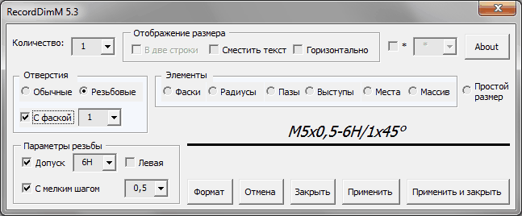
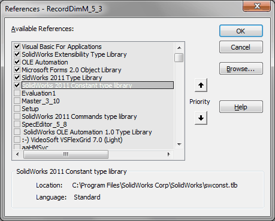

RecordDimM |
Top Previous Next |
|
Предназначен для оформления размеров отверстий, фасок, пазов, выступов, мест и массивов. Полученная запись не имеет параметрической связи с параметрами модели (кроме текста размера). Изначальный текст макроса был создан участником конференции САПР2000 (www.fsapr2000.ru) Rich. 
Работа с макросом интуитивна понятна. Выделяете размер, запускаете макрос, задаете параметры, нажимаете кнопку Применить. Если возникает необходимость оформить несколько размеров по имеющемуся образцу, то необходимо выделить данный размер, запустить макрос, нажать кнопку Формат, а затем указать в чертеже необходимые размеры.
Библиотеки: 
|